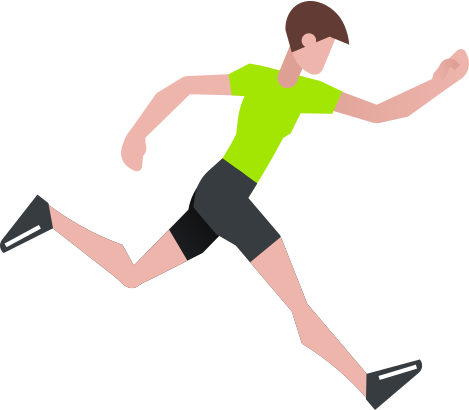
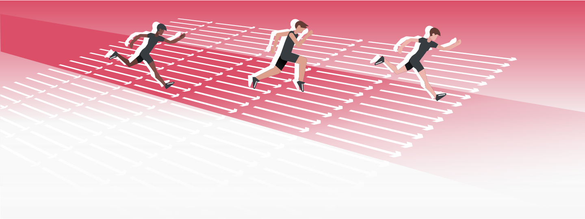

<!DOCTYPE html>
<html lang="ru">
  <head>
    <meta charset="UTF-8"/>
    <meta name="viewport" content="width=device-width, initial-scale=1.0"/>
    <meta http-equiv="X-UA-Compatible" content="ie=edge"/>
    <link rel="stylesheet" href="css/style.min.css"/>
    <title>Вики - Бег</title>
  </head>
  <body>
    <header class="header" id="header">
      <div class="header__container container">
        <button class="header__menu-btn btn-reset" aria-label="Кнопка управления меню" aria-expanded="false" id="menu-btn"></button>
        <div class="header__logo logo"><a class="logo__image" href="#">
            <svg>
              <use href="img/sprite.svg#logo"></use>
            </svg></a></div>
        <nav class="header__nav nav" id="nav">
          <ul class="nav__list list-reset">
            <li class="nav__item"><span class="nav__item-title">Виды двигатльной деятельности
                <svg>
                  <use href="img/sprite.svg#chevron"></use>
                </svg></span>
              <div class="nav__submenu">
                <div class="container">
                  <div class="nav__item-filter filter">
                    <div class="filter__item"><b class="filter__title">пол</b>
                      <label class="radio-button">мужской
                        <input type="radio" checked="checked" name="sex" value="male"/>
                      </label>
                      <label class="radio-button">женский
                        <input type="radio" name="sex" value="female"/>
                      </label>
                    </div>
                    <div class="filter__item"><b class="filter__title">возраст
                        <svg>
                          <use href="img/sprite.svg#chevron"></use>
                        </svg></b></div>
                  </div>
                  <div class="nav__item-group nav__item-group--search"><a class="nav__item-link nav__item-link--search" href="#">Расширенный поиск</a></div>
                  <div class="nav__item-group"><a class="nav__item-link" href="#">Ходьба</a><a class="nav__item-link" href="#">Езда на велосипеде</a><a class="nav__item-link" href="#">Бег</a><a class="nav__item-link" href="#">Лыжная подготовка</a><a class="nav__item-link" href="#">Катание на коньках</a><a class="nav__item-link" href="#">Скандинавская ходьба</a><a class="nav__item-link" href="#">Плавание</a></div>
                  <div class="nav__item-group"><a class="nav__item-link" href="#">Йога</a><a class="nav__item-link" href="#">Воркаут</a><a class="nav__item-link" href="#">Фитнес</a><a class="nav__item-link" href="#">Различные виды танцев</a><a class="nav__item-link" href="#">Аэробика</a></div>
                  <div class="nav__item-group"><a class="nav__item-link" href="#">Футбол</a><a class="nav__item-link" href="#">Волейбол</a><a class="nav__item-link" href="#">Баскетбол</a><a class="nav__item-link" href="#">Хоккей</a><a class="nav__item-link" href="#">Подвижные игры</a><a class="nav__item-link" href="#">Различные виды единоборств</a></div>
                </div>
              </div>
            </li>
            <li class="nav__item"><span class="nav__item-title">Тесты</span></li>
            <li class="nav__item"><span class="nav__item-title">Глосарий</span></li>
            <li class="nav__item"><span class="nav__item-title">Занятия</span></li>
          </ul>
        </nav>
      </div>
    </header>
    <main class="main">
      <section class="wiki">
        <div class="wiki__top">
          <div class="wiki__container container">
            <h2 class="wiki__title title">Бег</h2>
            <ul class="accordion__list list-reset">
              <li class="accordion">
                <button class="accordion__control btn-reset" aria-expanded="false"><span class="accordion__title">содержание</span><span class="accordion__icon accordion__icon--right" style="background-image: url('img/sprite.svg#chevron')"></span></button>
                <div class="accordion__content" aria-hidden="true">
                </div>
              </li>
            </ul>
          </div>
        </div>
        <div class="container">
          <div class="wiki__content">
            <h3 class="wiki__subtitle">Бег - это:</h3>
            <p class="wiki__descr">- способ передвижения циклического характера. Содержание цикла – двойной шаг с одноопорной фазой и фазой полета;</p>
            <p class="wiki__descr">- один из естественных способов передвижения человека в пространстве.Главное отличие бега от ходьбы — наличие фазы полета в процессе выполнения беговых шагов;</p>
            <p class="wiki__descr">- самостоятельная дисциплина легкоатлетического спорта, наиболее распространенное физическое упражнение, входящее в состав различных спортивных дисциплин.</p>
            <ul class="wiki__list list-reset">
                    <li class="wiki-accordion exp">
                      <button class="wiki-accordion__control btn-reset" aria-expanded="false"><span class="wiki-accordion__title">История</span><span class="wiki-accordion__icon"></span></button>
                      <div class="wiki-accordion__content" aria-hidden="true">
                        <ul class="wiki-history list-reset">
                          <li class="wiki-history__item"><span class="wiki-history__top">776 г. до н.э.</span>
                            <svg>
                              <use href="img/sprite.svg#long-green-arrow"></use>
                            </svg><span class="wiki-history__descr">Первые официальные соревнования по бегу – Олимпийские игры</span>
                          </li>
                          <li class="wiki-history__item"><span class="wiki-history__top">1837 г.</span>
                            <svg>
                              <use href="img/sprite.svg#long-green-arrow"></use>
                            </svg><span class="wiki-history__descr">В  Англии был проведен первый забег с препятствиями</span>
                          </li>
                          <li class="wiki-history__item"><span class="wiki-history__top">1888 г.</span>
                            <svg>
                              <use href="img/sprite.svg#long-green-arrow"></use>
                            </svg><span class="wiki-history__descr">Открытие кружка любителей спорта в России.</span>
                          </li>
                          <li class="wiki-history__item"><span class="wiki-history__top">1960 г.</span>
                            <svg>
                              <use href="img/sprite.svg#long-green-arrow"></use>
                            </svg><span class="wiki-history__descr">Советская сборная одержала победу над американцами</span>
                          </li>
                        </ul>
                        <p>Соревнования по бегу на скорость были приурочены к праздникам и проводились задолго до нашей эры в древних странах Переднего Востока – Междуречье, Месопотамия, Египет.</p>
                        <p>Скорость перемещения древних и средневековых армий зависела от скорости передвижения наименее мобильной ее части – пехоты. Тренировки по бегу – марш-броски с полной выкладкой были неотъемлемой частью жизни любой армии. Особо одаренных воинов, которые могли с высокой скоростью пробегать значительные расстояния, назначали гонцами. Они переносили свитки с информацией из города в город.</p>
                        <p>Первые официальные соревнования по бегу – Олимпийские игры 776 г до н. э. На этих соревнованиях спринтеры бежали только один стадий (192 м). В 724 г. до н. э. был введен бег на два стадия. Прошло еще четыре года, и древние греки решили ввести в программу бег на 24 стадия. Существуют записи, которые подтверждают, что уже в то время у древних греков были свои системы тренировок бегунов. Практиковались тренировки со смешанным темпом, специальные беговые упражнения (бег с высоким подниманием, захлест голени, бег прыжками). Победители игр становились в своих городах героями, им ставили памятники и воспевали в стихах. Благодаря таким одам до нас через три тысячелетия дошли имена первых звезд легкой атлетики — Астила, Эхиона и Фанаса.</p>
                        <p>В 394 г. н. э. античные олимпийские игры прекратили свое существование, и в наступившем темном времени соревнования по бегу практически не проводились. Забеги на скорость устраивались во время продолжительных средневековых празднеств, но не были настолько популярны и многочисленны, как в древние времена.</p>
                        <p>Дальнейшее развитие бег как самостоятельная дисциплина получил лишь в XVIII в.</p>
                        <p>Наибольшую популярность бег приобрел на Туманном Альбионе: здесь проводились состязания на больших дорогах между городами или на дорожках ипподромов. Устраивались также соревнования по часовому бегу. В 1837 г. в Англии был проведен первый забег с препятствиями, в котором участвовали студенты колледжа города Регби. В 1845 г. в Англии был устроен забег на длинную дистанцию.</p><b>Современные Олимпийские игры</b>
                        <p>Однако настоящий триумф спорта, в том числе бега, состоялся в 1886 г, когда под руководством Пьера де Куберт ена открылись первые Олимпийские игры современности. На соревнованиях в Афинах были представлены следующие дистанции – 100, 400, 800, 1500, 110 м с барьерами и марафон. Постепенно в программу игр добавлялись все новые и новые беговые виды. Стартовать на этих состязаниях можно было из любой удобной для бегуна позы.</p>
                        <p>В наше время бег непрерывно развивается. Несмотря на то, что основы техники бега (спринтерского и стайерского) были сформированы более века назад, современные талантливые тренеры разрабатывают новые подходы к тренировочному процессу и улучшению техники. Совершенствуются средства восстановления, благодаря чему бегуны приобретают большую выносливость. Отдельно необходимо сказать о массовости занятий бегом. В развитых странах бегать по паркам, городским улицам, тротуарам – привычное дело. Любители бега участвуют во всевозможных массовых пробегах, объединяются в клубы. Наибольшее развитие любительского бега наблюдается в марафоне и длинных дистанциях.</p><b>Бег в России</b>
                        <p>В России зарождение бегового движения связано с созданием в 1888 г. кружка любителей спорта. Он был образован в местечке Тярлево под Санкт-Петербургом Петром Москвиным, который привлекал к занятиям отдыхавшую на каникулах молодежь. Через год прошли первые официальные соревнования по бегу.</p>
                        <p>На международных соревнованиях члены кружка дебютировали в 1901 г. в Швеции. В первом чемпионате страны в 1908 г. в Санкт-Петербурге приняло участие всего 50 атлетов (из столицы и Риги). В 1912 г. делегация российских легкоатлетов впервые участвовала в Олимпийских играх.</p>
                        <p>Однако из-за низкого уровня развития бега в России, недоукомплектованности команды никто из отечественных атлетов не завоевал призовых мест. Основная проблема занятий бегом в дореволюционной России — избранность этого вида спорта: им занимались только состоятельные граждане.</p>
                        <p>В советское время бег стал действительно массовым явлением. На первом чемпионате СССР по легкой атлетике в 1923 г. участвовало 389 легкоатлетов из 40 городов страны. В спартакиаде 1928 г. приняло участие уже 1300 спортсменов не только из Советского Союза, но и 15 зарубежных стран.</p>
                        <p>Впервые легкоатлеты СССР участвовали в Олимпийских играх в 1952 г. Их выступление было успешным. На Олимпиаде 1960 г. советская легкоатлетическая сборная одержала победу над американскими бегунами. Впоследствии кроме Олимпийских игр главными международными соревнованиями стали матчевые встречи СССР – США, в ходе которых поочередно побеждали оба соперника.</p>
                        <p>Со временем благодаря совершенствованию тренировочного процесса, применению новых технологий при изготовлении покрытия беговых дорожек, модернизации одежды легкоатлетов и способов измерения времени результаты росли.</p>
                        <p>Беговая дорожка античных олимпийских игр была грунтовой. Атлеты стартовали, опираясь на мраморные плиты. Беговая дорожка первых Олимпийских игр современности была из уплотненного грунта. Следующим шагом стало покрытие дорожек слоем гари. Прогресс не стоял на месте, беговые поверхности выполняли из бетона, асфальта, резинобитума. Сейчас устраивают покрытия из полиуретана на асфальтовой основе .</p>
                      </div>
                    </li>
                    <li class="wiki-accordion exp">
                      <button class="wiki-accordion__control btn-reset" aria-expanded="false"><span class="wiki-accordion__title">Общие рекомендации для бега</span><span class="wiki-accordion__icon"></span></button>
                      <div class="wiki-accordion__content" aria-hidden="true">
                        <ul class="wiki-accordion__cards list-reset">
                          <li class="wiki-accordion__card"><b class="wiki-accordion__subtitle">о нагрузках</b>
                            <p>Максимальный эффект и пользу от занятий бегом можно получить только при регулярных тренировках. Для начинающих достаточно будет выходить на пробежки через день, два-три раза в неделю. Со временем можно увеличивать как продолжительность, так и количество беговых тренировок, а также дополнять их силовыми тренировками, растяжкой, йогой.</p>
                          </li>
                          <li class="wiki-accordion__card"><b class="wiki-accordion__subtitle">начало</b>
                            <p>Начинать стоит с 10-15 минут легкого бега в день и постепенно увеличивая интенсивность и продолжительность тренировок. Причём можно чередовать бег и ходьбу. Даже 6-10 минут джоггинга, бега в очень медленном темпе, дают позитивный эффект. Большинства позитивных эффектов бега можно добиться при длительности тренировки от 20 до 40 минут.</p>
                          </li>
                          <li class="wiki-accordion__card"><b class="wiki-accordion__subtitle">бег для здоровья</b>
                            <p>Американская ассоциация кардиологов, а также ВОЗ, рекомендуют для общего поддержания здоровья сердечно-сосудистой системы практиковать в неделю не менее 150 минут (5 дней по 30 минут) аэробных нагрузок низкой интенсивности или 75 минут (3 дня по 25 минут) средней интенсивности или их комбинацию.</p>
                          </li>
                        </ul>
                      </div>
                    </li>
                    <li class="wiki-accordion exp">
                      <button class="wiki-accordion__control btn-reset" aria-expanded="false"><span class="wiki-accordion__title">Спортивная одежда для бега</span><span class="wiki-accordion__icon"></span></button>
                      <div class="wiki-accordion__content" aria-hidden="true">
                        <p>Для бега рекомендуется использовать майки из синтетических материалов, отводящих влагу. Шорты или спортивные брюки - также лучше синтетические или плотные из хлопка для прохладной погоды.</p>
                        <p>В случае прохладной погоды или во время солнечной надевают майки с длинными рукавами.</p>
                        <p>Специалисты не рекомендуют бегать в обуви для кроссфита, в теннисных кроссовках, кедах или обуви спортивного стиля. Оптимальный вариант – беговые кроссовки.</p>
                        <p>Вечером в лесу или парке лучше надевать защитные очки на случай встречи с ветками, днем – солнцезащитные очки и обязательно солнцезащитный спрей на открытые части тела при высокой солнечной активности.</p>
                        <p>Возможные аксессуары для пробежек:</p>
                        <div class="wiki-accordion__accessories">
                          <ul class="wiki-accordion__list list-reset">
                            <li class="wiki-accordion__list-item"><span class="wiki-accordion__list-icon"></span>
                              <p class="wiki-accordion__list-descr">вода в пластиковой бутылке на поясе или в сумке;</p>
                              <p class="wiki-accordion__list-descr">сумка-пояс (для телефона, ключей);</p>
                            </li>
                            <li class="wiki-accordion__list-item"><span class="wiki-accordion__list-icon"></span>
                              <p class="wiki-accordion__list-descr">синтетическая шапка и перчатки в холодную погоду;</p>
                              <p class="wiki-accordion__list-descr">защитные очки;</p>
                            </li>
                            <li class="wiki-accordion__list-item"><span class="wiki-accordion__list-icon"></span>
                              <p class="wiki-accordion__list-descr">наушники для бега (лучше всего беспроводные);</p>
                              <p class="wiki-accordion__list-descr">электронные смарт часы;</p>
                            </li>
                          </ul>
                        </div>
                      </div>
                    </li>
                    <li class="wiki-accordion exp">
                      <button class="wiki-accordion__control btn-reset" aria-expanded="false"><span class="wiki-accordion__title">Техника бега</span><span class="wiki-accordion__icon"></span></button>
                      <div class="wiki-accordion__content" aria-hidden="true">
                        <div class="wiki-accordion__text">
                          <p>Для бега характерен тот же цикл движений, что и при ходьбе, те же действующие силы и функциональные группы мышц. Отличием бега от ходьбы является отсутствие при беге фазы двойной опоры.</p>
                          <p>Кисть нужно слегка сжать в кулак, запястье должно быть слегка напряжено с целью фиксации в одном положении. Руки должны быть свободно согнуты в локтевом суставе и располагаться симметрично. Чем чаще ритмичные движения руками, тем выше темп. Плечи нужно поддерживать в расслабленном состоянии и не поднимать их.</p>
                          <p>Корпус нужно наклонить слегка вперед (на 5-7 градусов, что обеспечивает движение по инерции). Нельзя допускать раскачиваний туловища из стороны в сторону, так как это увеличит сопротивление воздуха, а значит, уменьшит скорость и увеличит нагрузку. В результате вы быстрее устанете.</p>
                          <p>Во время бега нужно держать осанку, то есть не надо слишком наклоняться вперед, так как это приведет к затрудненному дыханию и опасности «прямой ноги», также не нужно запрокидывать тело назад, в противном случае живот увеличит сопротивление встречного воздуха, а из-за наклона туловища придется увеличить высоту подъема бедра, что приведет к возрастанию нагрузки на позвоночник. Поэтому соблюдение неподвижности туловища во время бега предохраняет от получения травм позвоночника. Точка соприкосновения стопы с поверхностью должна находиться на одной линии с бедрами и головой. Постановка стопы производится с пятки на носок. Исключением является спринт, где спортсмены преодолевают дистанцию исключительно на носках. Носок немного повернут внутрь, что позволяет сохранить скорость. Если носки смотрят в разные стороны, то усилия будут прилагаться с меньшей эффективностью.</p>
                          <p>Высота колен зависит от дистанции. Существует правило – чем выше колено, тем больше энергии затрачивается. Поэтому, если вы бежите длинную дистанцию, то старайтесь минимально поднимать колено.</p>
                          <p>Длина бегового шага должна быть естественной. Не нужно стремиться увеличить её. Со временем, когда мышцы ваших ног окрепнут и станут более развитыми, длина вашего бегового шага постепенно увеличится естественным образом. Голова играет несущественную роль во время пробежки. Но помните, что низко опущенная голова нагружает шейный отдел позвоночника, что может вызвать болевые ощущения.</p>
                          <p>Бег должен быть максимально естественным и не вызывать напряжения</p>
                        </div>
                        <div class="wiki-accordion__image"></div>
                      </div>
                    </li>
                    <li class="wiki-accordion">
                      <button class="wiki-accordion__control btn-reset" aria-expanded="false"><span class="wiki-accordion__title">Дыхание</span><span class="wiki-accordion__icon"></span></button>
                      <div class="wiki-accordion__content" aria-hidden="true">
                        <p>Классическая техника среднеинтенсивного бега подразумевает дыхание носом.<span>Техника дыхания предельно проста, она называется 2-2:</span></p>
                        <ol class="wiki-accordion__list wiki-accordion__list--style list-reset">
                          <li class="wiki-accordion__list-item">
                            <p>На каждые два шага (левой и правой ногой) делается вдох.</p>
                          </li>
                          <li class="wiki-accordion__list-item">
                            <p>На следующие два шага – выдох.</p>
                          </li>
                        </ol>
                        <p>Не получается дышать через нос, нужно снижать нагрузку. Специалисты говорят о том, что оптимальная скорость бега – это когда человек может вести непринужденную беседу во время пробежки, не испытывая проблем с поступлением воздуха. На выдохе нужно слегка акцентировать внимание, так как выдох позволяет снять нагрузку на дыхательную систему.</p>
                        <p>При появлении боли в боку можно попробовать дышать через рот. Боль – это признак нехватки воздуха. Если боль усиливается, то следует снизить свою активность и уменьшить нагрузку.</p>
                        <p>Учащенный ритм – тоже сигнал к тому, что нагрузка превышает возможности вашего организма. Лучше уменьшить её.</p>
                        <p>Дыхание при беге строится исходя из потребности организма в кислороде. Кислородный голод вызывает повышенное сердцебиение, которое влияет на учащение дыхания.</p>
                        <p>Дыхание, при котором бегуну легко разговаривать, называется аэробным, считается по пульсу в размере менее 60 % относительно максимально возможного. Дыхание, при котором тяжело разговаривать, называется дыханием с кислородным голодом. Искусственно созданный кислородный голод заставляет мускулатуру активнее работать, увеличивать количество микрокапилляров, развивает в лёгких увеличенное количество кровеносных сосудов, что из меньшего количества воздуха позволяет отбирать кислород качественнее.</p>
                        <p><b>Эйфория бегунов</b> – состояние особого подъёма, сходное с лёгким опьянением, наблюдаемое у спортсменов в циклических видах спорта во время длительной физической активности, в результате которого возрастает устойчивость к боли и усталости. Теории, объясняющие действие эйфории бегуна, появились в 1970-х годах в США на волне интереса к бегу трусцой, тогда же были открыты опиатные μ-рецепторы в мозгу.</p>
                      </div>
                    </li>
                    <li class="wiki-accordion">
                      <button class="wiki-accordion__control btn-reset" aria-expanded="false"><span class="wiki-accordion__title">Питание</span><span class="wiki-accordion__icon"></span></button>
                      <div class="wiki-accordion__content" aria-hidden="true">
                        <p>Занимаются бегом на пустой желудок, планируя питание таким образом, чтобы к началу тренировок желудок был пуст.</p>
                        <p>Полный желудок напрягает поджелудочную железу, может способствовать появлению боли в боку.</p>
                        <p>Для того, чтобы во время тренировки не чувствовать дискомфорт в желудке и кишечнике, после приема пищи должно пройти два-три часа. В крайнем случае можно перекусить бананом, съесть батончик за час до начала пробежки.</p>
                        <p>Если пробежка утром, можно бегать «на голодный желудок», выпив стакан тёплой воды или сделать легкий перекус как перед другими тренировками.</p>
                        <p>После окончания бега нужно выпить фруктовый сок или воды, желательно обогащенной минеральными солями. Контрастный душ усилит бодрящий эффект тренировки.</p>
                        <p>Нужно подождать хотя бы полчаса, прежде чем садиться за стол.</p>
                        <p>Для более продолжительного по времени бега (от 1-2 часов) желательно принимать быстроусваиваемую организмом пищу. Люди, активно занимающиеся бегом, применяют спортивное питание.</p>
                        <p>Бегуны, которые тренируются по утрам, делятся на тех, кто предпочитает бегать натощак, и тех, кому желательно подкрепиться. Если вы относитесь к первой категории, не забывайте, что тренировка на голодный желудок должна быть низкоинтенсивной и не слишком продолжительной. Если вам комфортнее бегать, перекусив перед этим то следует учитывать, что неправильная еда, которую вы съели до (в том числе и за пару часов) или во время бега, – одна из возможных причин так называемой «диареи бегуна». Пища, богатая жирами, белками и клетчаткой, плохо подходит для употребления перед тренировкой. Белки и жиры слишком сложно переварить, и ваш организм вместо того, чтобы направить всю энергию на бег, будет тратить ее на пищеварение. А продукты, богатые клетчаткой, могут вызвать дискомфорт и боли в животе из-за того, что не перевариваются до конца и быстро продвигаются «на выход».</p>
                        <p>Пять типов продуктов, которые не стоит есть перед пробежкой: зелень и салаты, бобовые, молочные продукты, жирное и жареное, сладости и некоторые соки (индивидуально).</p>
                      </div>
                    </li>
                    <li class="wiki-accordion exp">
                      <button class="wiki-accordion__control btn-reset" aria-expanded="false"><span class="wiki-accordion__title">Бег как вид спорта</span><span class="wiki-accordion__icon"></span></button>
                      <div class="wiki-accordion__content" aria-hidden="true">
                        <div class="wiki-accordion__image-bg"></div>
                        <div class="wiki-accordion__text">
                          <p><b>Беговые виды лёгкой атлетики объединяют следующие стадионные дисциплины:</b></p>
                          <p>-спринт(100 м, 200 м и 400 м),-бег на средние дистанции(от 800 до 3000 м, в том числе бег на 3000 м с препятствиями),-бег на длинные дистанции(классические дистанции 5000 м и 10 000 м),-барьерный бег(110 м, 400 м);-эстафета(4×100 м, 4×200 м, 4×400 м, 4×800 м, 4×1500 м).<span>Все они проходят на дорожках стадиона.</span></p>
                          <p><b>Классификация любительского бега</b></p>
                          <p>Челночный – выполнение установленного норматива на время.</p>
                          <p>Развивает скорость, выносливость и ловкость.</p>
                          <p>Интервальный – чередование бега и ходьбы. Применяется для сжигания подкожного жира.</p>
                          <p>Джоггинг – бег трусцой с умеренной скоростью. Хорош для общего оздоровления, может применяться людьми разного возраста и уровня тренированности.</p>
                          <p>Кросс – по пересеченной местности с разным типом покрытия (песок, земля) и преодолением подъемов, спусков, естественных препятствий.</p>
                          <p><b>Общие правила соревнований</b></p>
                          <p>На старте спортсмены занимают свои позиции согласно жребию или местам, занятым на предыдущих этапах соревнований. При команде «на старт» («on your marks») занимают места у стартовой линии или в колодках (спринт). При команде «внимание» («set») готовятся к старту и должны прекратить всякое движение (команда применяется только в спринте). Команду «марш» («start») даёт стартер выстрелом стартового пистолета, с которым на больших соревнованиях соединён электронный таймер.<span>В ходе бега спортсмены не должны мешать друг другу, хотя при беге особенно на длинные и средние дистанции возможны контакты бегунов. На дистанциях от 100 м до 400 м спортсмены бегут каждый по своей дорожке. На дистанциях от 600 м – 800 м начинают на разных дорожках и через 200 м выходят на общую дорожку. 1000 м и более начинают старт общей группой у линии, обозначающей старт.</span><span>Выигрывает тот спортсмен, который первым пересекает линию финиша. При этом в случае спорных ситуаций привлекается фотофиниш, и первым считается тот легкоатлет, часть туловища которого первой пересекла линию финиша.</span></p>
                        </div>
                      </div>
                    </li>
            </ul>
          </div>
        </div>
      </section>
    </main>
    <footer class="footer">
      <h2 class="visually-hidden">Подвал сайта</h2>
      <div class="footer__container container">
        <ul class="footer__nav list-reset">
          <li class="footer__item"><a class="footer__link" href="#">О нас</a></li>
          <li class="footer__item"><a class="footer__link" href="#">Спонсоры</a></li>
          <li class="footer__item"><a class="footer__link" href="#">Разработчики</a></li>
          <li class="footer__item"><a class="footer__link" href="#">Контакты</a></li>
          <li class="footer__item footer__social">
            <ul class="social list-reset">
              <li class="social__item"><a class="social__link" href="#" aria-label="facebook">
                  <svg>
                    <use href="img/sprite.svg#fb"></use>
                  </svg></a></li>
              <li class="social__item"><a class="social__link" href="#" aria-label="instagram">
                  <svg>
                    <use href="img/sprite.svg#ig"></use>
                  </svg></a></li>
              <li class="social__item"><a class="social__link" href="#" aria-label="youtube">
                  <svg>
                    <use href="img/sprite.svg#yt"></use>
                  </svg></a></li>
            </ul>
          </li>
        </ul>
      </div>
    </footer>
    <script src="js/script.min.js"></script>
  </body>
</html>